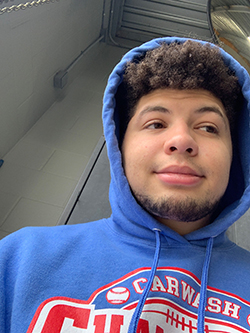

Hello my name is Austin Briller. I was born and raised in Texas. I began drawing small doodles for my friends in middle school. What began as small doodles for friends led to more students asking for bigger pieces. As a young kid I wasn't interested in making these drawings for people so I stopped drawing completly. Junior year of High School my friends discovered my secret talent. I didn't want them to at first because I'm an introvert and didn't really want the attention. Well a couple of weeks go by and I start drawing again due to some peer pressure and some excitement. Soon a lot of people at school begin asking for pictures and instead of turning them down I decided to do it. I was very rusty at first as some can tell. With some repition (and I mean A LOT of repition) I felt like I was doing better. Now I like trying new types of utensils to make a piece. I started using Procreate, Paints, and Markers/Colored Pencils.
